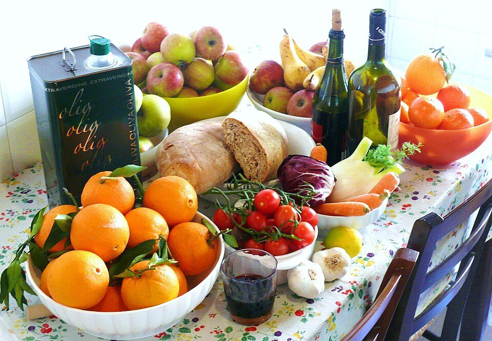

No hay superalimentos, hay patrones
Ningún alimento aislado protege el cerebro por sí solo. Lo que importa es el patrón de alimentación a lo largo de los años. Las dietas que mejor se asocian con un cerebro sano son la dieta mediterránea y la dieta MIND, que combina la mediterránea con la DASH (pensada para bajar la tensión).
La dieta mediterránea
Se basa en:
- Aceite de oliva virgen extra como grasa principal.
- Verduras, hortalizas y fruta a diario.
- Legumbres varias veces por semana.
- Cereales integrales.
- Frutos secos: un puñado al día.
- Pescado, sobre todo azul, dos o tres veces por semana.
- Poca carne roja y procesada, pocos dulces y ultraprocesados.
En el estudio español PREDIMED, una dieta mediterránea con aceite de oliva o frutos secos redujo un 30 % los eventos cardiovasculares, incluido el ictus, y un subestudio mostró mejor función cognitiva.
La dieta MIND
Destaca diez grupos de alimentos «buenos para el cerebro» y cinco que conviene limitar:
| Más | Menos |
|---|---|
| Verduras de hoja verde (casi a diario) | Carne roja |
| Otras verduras | Mantequilla y margarina |
| Frutos rojos (2 o más veces por semana) | Queso |
| Frutos secos | Bollería y dulces |
| Aceite de oliva | Fritos y comida rápida |
| Cereales integrales, legumbres, pescado, aves |
Los estudios observacionales la asociaron con un envejecimiento cognitivo más lento. Un ensayo de 2023 en personas que además perdían algo de peso no encontró diferencias frente a una dieta control también saludable: lo que sugiere que el beneficio está en comer bien en general, más que en una fórmula exacta.
Lo que conviene limitar
- Sal: sube la tensión, el principal factor de riesgo de ictus. Menos de 5 g al día (una cucharadita), contando la que ya llevan el pan, los embutidos y los precocinados.
- Azúcares y ultraprocesados: se asocian con obesidad, diabetes y más riesgo de demencia.
- Alcohol: ver alcohol, tabaco y drogas.
Café y té

El café con moderación (2-4 tazas al día) es seguro y se asocia con menos riesgo de párkinson y quizá de ictus y depresión. Mejora la atención a corto plazo. Conviene evitarlo por la tarde para no perjudicar el sueño. El té verde también se asocia con beneficios modestos.
Vitaminas y suplementos
En una persona con una alimentación variada, los suplementos no mejoran la memoria ni previenen la demencia. Ver suplementos para la memoria. Las excepciones son las carencias reales:
- Vitamina B12: su falta causa deterioro cognitivo, neuropatía y problemas de la médula. Es frecuente en mayores, en veganos y en quienes toman metformina u omeprazol durante años.
- Ácido fólico en el embarazo: previene los defectos del tubo neural (espina bífida).
- Vitamina D, si hay déficit.
- Yodo en el embarazo, para el desarrollo cerebral del bebé.
Peso y cerebro
La obesidad en la edad media aumenta el riesgo de demencia, y la diabetes mal controlada daña los vasos y el propio tejido cerebral. Mantener un peso saludable y controlar el azúcar es una de las mejores inversiones para el cerebro. En la vejez, en cambio, el riesgo está más en la desnutrición y la pérdida de peso.
Fuentes
- Estruch R, et al. Primary prevention of cardiovascular disease with a Mediterranean diet supplemented with extra-virgin olive oil or nuts (PREDIMED). N Engl J Med. 2018;378:e34.
- Valls-Pedret C, et al. Mediterranean diet and age-related cognitive decline: a randomized clinical trial. JAMA Intern Med. 2015;175:1094-103.
- Morris MC, et al. MIND diet slows cognitive decline with aging. Alzheimers Dement. 2015;11:1015-22.
- Barnes LL, et al. Trial of the MIND diet for prevention of cognitive decline in older persons. N Engl J Med. 2023;389:602-11.